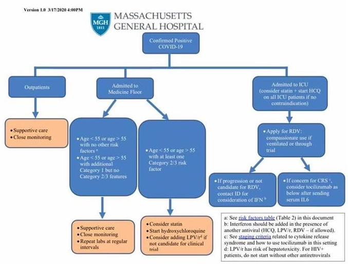

Администрация США по пищевым продуктам и лекарственным средствам (FDA) выдала экстренное разрешение на применение двух противомалярийных препаратов для лечения госпитализированных пациентов с COVID-19.
Администрация США по пищевым продуктам и лекарственным средствам (FDA) выдала экстренное разрешение на применение двух противомалярийных препаратов для лечения некоторых госпитализированных пациентов с коронавирусной инфекцией.
FDA одобрила применение противомалярийных препаратов в соответствии с процедурой Экстренного Разрешения на Применение (Emergency Use Authorisation — EAU), что позволяет использовать препараты гидроксихлорохин и хлорохин, пожертвованные Стратегическому запасу государства (Strategic National Stockpile — SNS), для распространения и использования у подростков и взрослых пациентов с COVID-19, которые были госпитализированы и которые не могут участвовать в клинических исследованиях.
В соответствии с процедурой EUA требуется, чтобы медицинским работникам и пациентам были доступны информационные бюллетени, содержащие важную информацию об использовании хлорохина и гидроксихлорохина при лечении COVID-19, включая известные на настоящий момент риски и возможные лекарственные взаимодействия.
Президент США Дональд Трамп недавно подвергся критике за продвижение гидроксихлорохина, который часто назначают для лечения ревматоидных заболеваний, в качестве потенциально возможного лечения COVID-19 без особых доказательств того, что препарат работает, и несмотря на опасения по поводу безопасности данного лечения.
Гидроксихлорохин и хлорохин изучаются в рамках международного исследования, инициированного ВОЗ для поиска потенциальных методов лечения COVID-19.
Рисунок 1. Предлагаемая схема ведения пациента с COVID-19 Массачусетского общего госпиталя (март 2020)

FDA authorizes emergency use of antimalarial drugs for COVID-19
FDA.gov